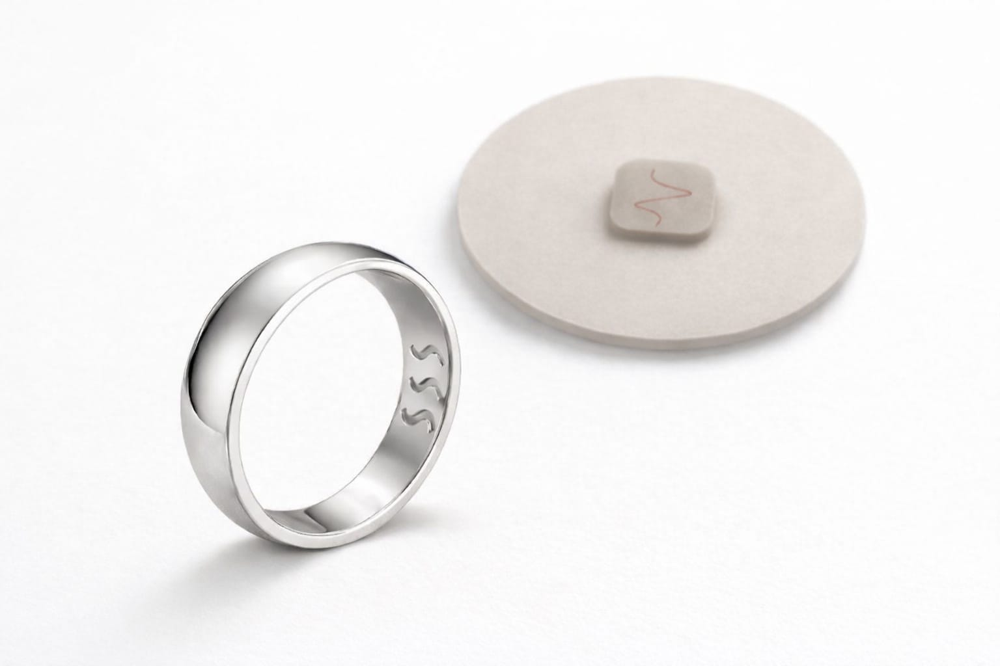

Bio-giyilebilirler eskidi.
Gelecek bağlamsal.
Sadece ölçmeyen, anlayan – ve vücudunuzun kalıplarını size gösteren bir sistem.
Potansiyeli keşfet
Nanil bir giyilebilir değil.
O bir sistem.
Sensörlerden bağlamı sistematik olarak türeten ve günlük yaşamdaki bağlantıları görünür kılan uygulama öncelikli bir sistem.
İyilik odaklı. Tıbbi değil.
Sistem böyle düşünüldü

Uygulama merkezi sistemdir.
Yüzük ve Patch ham veri sağlar.
Değer tek tek verilerden değil, bunların birbirleriyle olan ilişkisinden doğar.
Ayrım
Nanil artık ölçmüyor.
Nanil farklı yorumluyor.
İzole KPI'lara odaklanmak yok.
Günlük değerlere optimize etmek yok.
Zaman, bağlam ve davranış
üzerinden kalıplar var.
Bilimsel Arkaplan: Güncel araştırmalar, insan durumundaki değişikliklerin ince ses desenlerinde yankılandığını göstermektedir. Metabolik ve ruh sağlığı araştırmalarından elde edilen çalışmalar, yapay zeka modellerinin bu tür sapmaları tespit edebildiğini ve bunları stres veya düzensizlik göstergesi olarak kullanabildiğini kanıtlamaktadır. Nanil bu bulgulara dayanarak sesi bir sistem sinyali olarak anlar – teşhis için değil, erken yönlendirme ve durumsal destek için.
Durum
Nanil erken aşama bir projedir.
Sistem mimarisi hazır.
Önce uygulama geliştiriliyor.
Sistem oturduğunda donanım gelecek.
Kurucu
NANIL Pulse'un arkasında vizyon ve uzmanlığa sahip bir kişi var.
Nazan Nil Dalkıc (Nazannil)
Wellness ve stres yönetiminde 35+ yıl deneyim. NLP Master, Reiki Master. Çok dilli: Almanca, Türkçe, İngilizce. Misyonu: Teknolojiyi terapötik yetkinlikle birleştirmek – NANIL Pulse böyle doğdu.
🎙️ Sesli Analiz Demosu
Nanil Pulse sesinizi nasıl yorumladığını keşfedin. Bir senaryo seçin ve simülasyonu başlatın.
Kişiselleştirilmiş esenliğin geleceğini şekillendirin.
Yeni bir kategori tanımlamaya hazır vizyoner kurucu ortaklar, partnerler ve tohum yatırımcılar arıyoruz. Bu, en başından itibaren orada olma fırsatıdır.
İletişime Geç & Pitch Deck İste